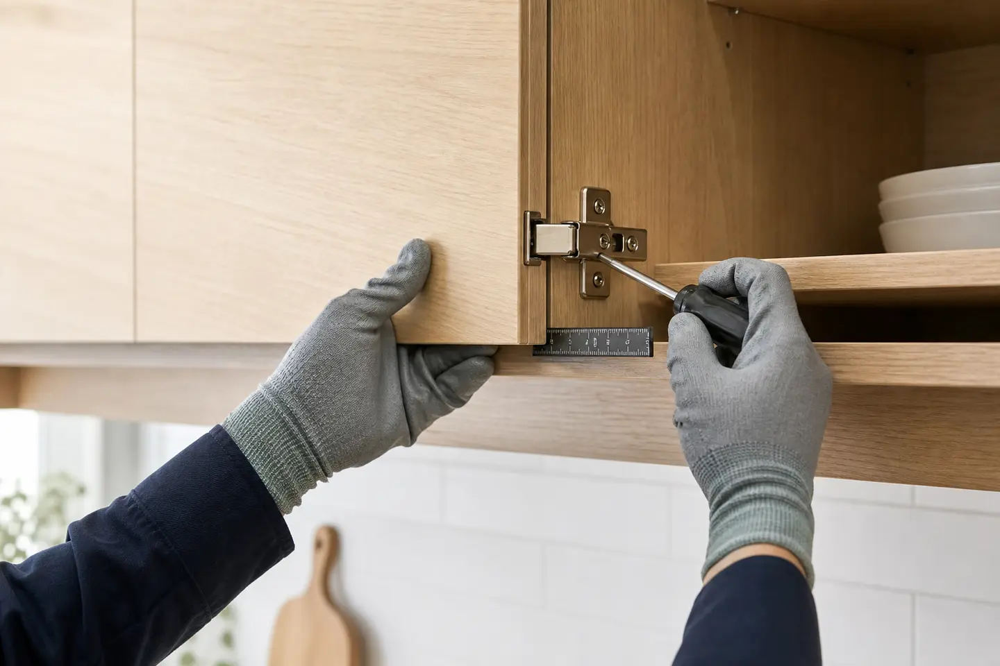

안녕하세요:) 꼼꼼한 남자가 직접 시공하는 세븐홈케어 대표입니다. 내 가족이 사는 집이라 생각하고 최고 품질의 자재로 정직하게 시공을 해드리고 있으니 믿고 맡겨 주시기 바랍니다.
이번 작업의 확인 포인트
불편이 생긴 위치와 부속 상태를 확인하고 주변 마감재를 보호하면서 필요한 조정, 체결, 교체 작업을 진행합니다.

안녕하세요:)
꼼꼼한 남자가 직접 시공하는
세븐홈케어
대표입니다.
내 가족이 사는 집이라
생각하고 최고 품질의
자재로 정직하게 시공을
해드리고 있으니 믿고
맡겨 주시기 바랍니다.
이번에 소개할 현장 사진입니다.
회전식 신발장을 사용 중인데
회전도 잘 안되고 플라스틱
받침대가 자꾸 빠져서 일반
신발장처럼 선반을 설치하고
싶다고 하십니다.


현관 신발장 선반제작 설치
전 / 후 비교 사진입니다.
회전식 신발장이 고장 나서
사용을 못 하시고 신발은
전부 빼놓은 상태여서
수납할 선반제작 설치를
요청하셨습니다.


회전식 신발장은 플라스틱
재질로 공간 활용성이 좋아서
인기가 많았었죠.
하지만 플라스틱 재질이라서
내구성이 약해서 고장이 나면
수리가 어렵다는 단점도 있어요.
내구성이 좋아서 절대
고장 날 일 없는 선반장으로
제작 설치해 드렸습니다.
현관 신발장 선반제작 설치 전
[세븐홈케어 문의방법입니다]

현장에서 작업하는 경우
소음으로 인해 전화 통화가
어려울 수 있습니다.
보내주신 현장 사진을 보고
정확한 시공 방법과 견적을
함께 안내해 드리겠습니다.
전화 통화가 어려우시다면
네이버 톡톡으로 문의 바랍니다.
하단 초록색 버튼을 누르시면
상담 참으로 연결됩니다.

현관 신발장 선반제작 설치를
요청하신 이번 현장은
고양시 덕양구에 위치해 있습니다.
어제는 인천 남동구로 시공을
다녀왔는데 오늘은 서울로
시공을 오게 되었습니다.
[세븐홈케어 출장 가능 지역]
서울, 경기 전 지역
인천 검단 송도 청라 안산 위례 배곧
시흥 구리 일산 성남 분당 안양 송파
서초 반포 양재 과천 하남 수원 광교
영통 동탄 용인 기흥 수지 판교 흥덕
한숲 안성 평택 천안 아산 향남 고덕
등 여러 지역을 방문 드리고 있습니다.
위 지역 말고도 고객님께서
필요로 하시는 곳은 어디든지
방문을 드리고 있습니다.
거리가 먼데 여기까지
오실 수 있나 여쭤보시는데
고민하지 마시고 편하게
언제든지 연락 주세요^^
세븐홈케어는 고객님께서
원하시는 곳이라면
어디든지 달려갈 준비가
되어있습니다~
그럼 포스팅을 시작해 보겠습니다!
작업 내용 / 작업 인원 / 작업 시간
작업 완료 후 고객님 말씀 등을
간략하게 확인해 보겠습니다.

이번 포스팅의 주요 내용
● 작업 내용
-. 현관 신발장 선반제작 설치 작업
● 작업 인원
-. 1명
● 작업 시간
-. 1시간
● 작업 완료 후 고객님 말씀
-. 플라스틱 회전형 신발장이 고장이 나서
신발을 정리도 못하고 불편했는데 실측도
바로 와주시고 원하는 색상으로 선반을
잘 설치해 주셔서 감사합니다.
세븐 홈 케어
현관 신발장 선반제작
설치하는 과정을 작업
순서대로 확인해 보겠습니다.
No. 01
현장 상태 확인하기


현장에 도착해서 상태를 살펴보니
회전형 신발장 플라스틱
받침대가 몇 개는 부서져서
빼놨고 나머지도 곧 떨어질 것
같아서 사용을 못 하고 계시네요.
No. 02
회전형 신발장 분리하기


위태롭게 조립되어 있는
플라스틱 회전형 신발장을
고정하고 있는 볼트를
풀어서 분리하였습니다.
고장 난 회전형 신발장은
철수할 때 폐기처분
해드리고 있습니다.
No. 03
철거한 자리 청소하기


회전형 신발장을 철거 후
먼지와 이물질이 있어서
물티슈로 깨끗하게
청소를 했습니다.
No. 04
선반 설치하기


다보 피스를 조립해 주고
선반을 올려서 수평이 잘
맞는지 수평계로 확인합니다.
설치가 간단해 보여도
다보 피스를 잘못 조립하면
수평이 맞지 않아서 신발을
올렸을 때 까딱까딱해서
소리가 나게 됩니다.
선반은 총 4개를 설치해
드렸고 실측 시 색상과
간격은 고객님께서
요청하신 내용을 반영하여
작업을 하였습니다.
좌우 유격 없이 위치도
딱 맞게 설치가 되었네요.
고객님께서 요청하신 오늘 의뢰 해결
현관 신발장 선반제작 설치
작업을 완료하였습니다.
신발장 원하는 사이즈로
제작이 필요하시다면
전문업체 세븐홈케어에
의뢰해 주시기 바랍니다.
세븐홈케어는 주말이나 공휴일에도
빠르게 작업해 드리고 있으니
언제든지 문의해 주세요.

이상으로 현관 신발장 선반제작
설치하는 작업에 대한
포스팅을 마무리하겠습니다.
방문해 주신 모든 분들께 진심으로
감사드립니다.